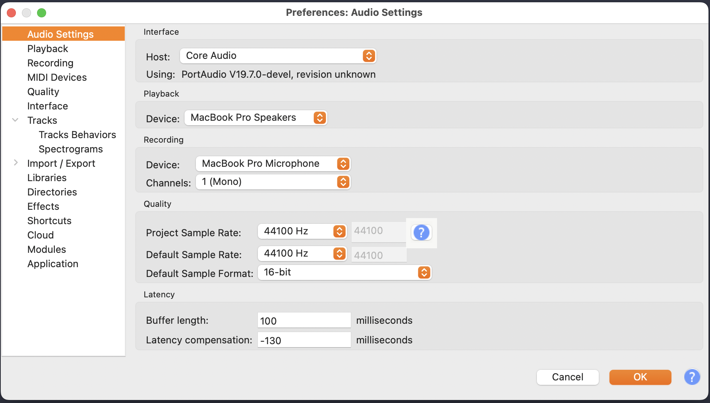
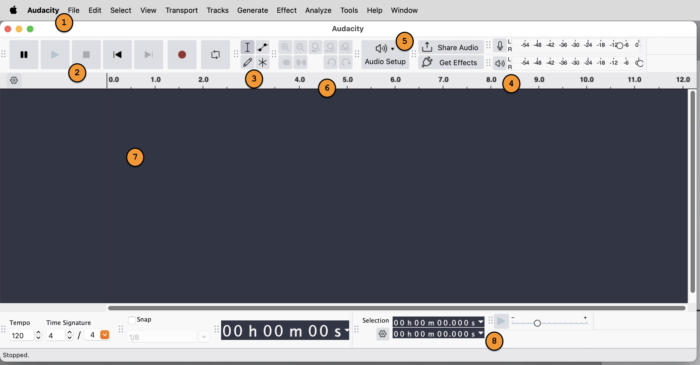
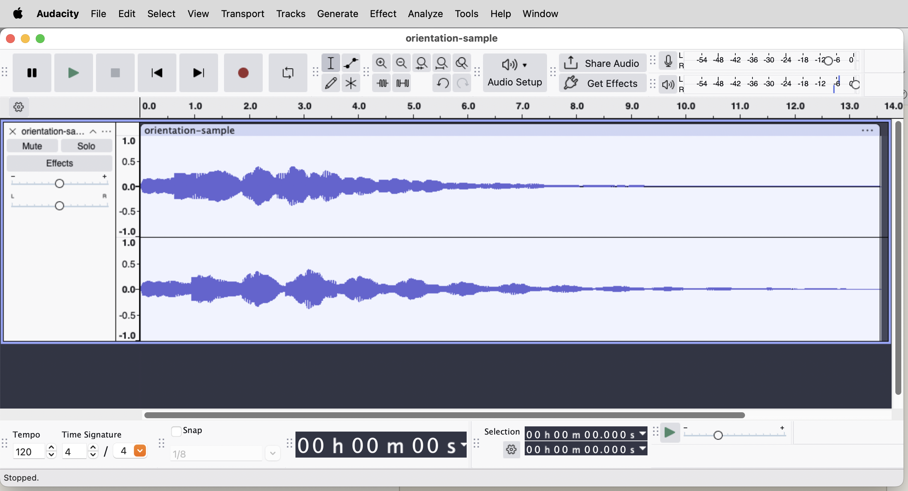
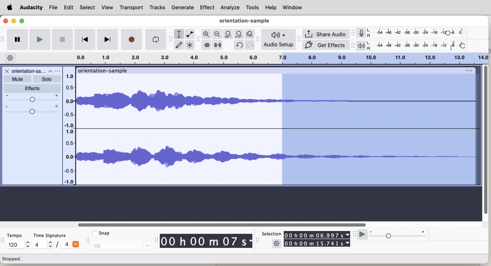
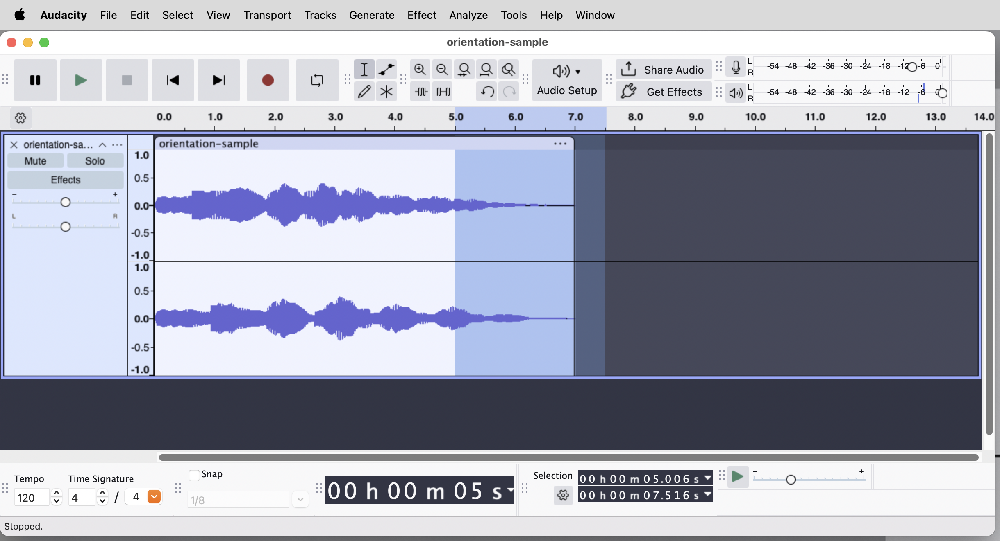
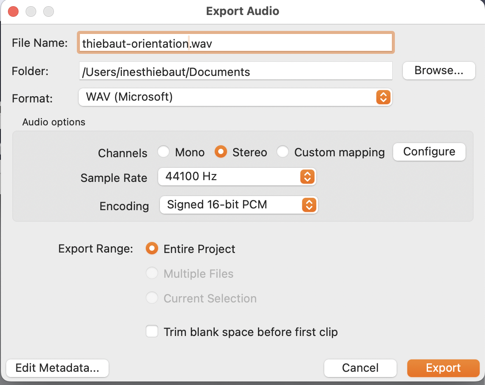

Audacity is the DAW we'll use for the rest of Module 2. By the end of this lab session, you'll have opened it, set its project format to the course standard, imported a short sample from the NAS, played it back, made a basic edit, exported the result, and uploaded everything back to the NAS so it's there for you next session. None of these moves is hard. The point of doing them now is so the workflow is automatic by the time Project 1 starts.
Look at the laminated Session Routines card at your station (Handout 02). Today you'll do every step on that card for the first time, in order. It will feel slow today; by Week 4 it will be muscle memory. Keep the card visible so you can refer to it as we go.
Today's sample lives on the class NAS in shared/module-02/orientation/. It's a short field recording of a struck bell, about fifteen seconds, with a clear sharp attack followed by a long decay. You'll use it to learn Audacity's basic moves.
smb://mus381-nas.local and click Connect. Sign in with your class account if prompted.shared/module-02/orientation/.orientation-sample.wav. Copy it (drag it while holding Option, or right-click and choose Copy) into your local folder at ~/Documents/lastname/module-02/. Make a module-02 folder if you don't have one yet.You always work from your local folder, never directly from the NAS. The NAS is the master copy that travels between you and the next session; your local folder is your live workbench. Pull from NAS at the start of session, work locally, push back to NAS at the end. This is the same workflow on the laminated routines card: internalize it now.

This is the CD standard, the format Schaeffer's recordings sit at on a remaster, and what we agreed on for Module 2 in Monday's reading. In Module 4 we'll switch to Ableton at 48 kHz / 32-bit. For now, every project you make in Audacity uses these numbers.
Before you import anything, take a minute to learn the names of the things on screen. You don't need to memorize all of these, just be able to find them when the instruction says "click the play button" or "use the selection tool."

Two things to know for today:
~/Documents/lastname/module-02/ and select orientation-sample.wav. Click Open.
Look at the waveform shape. You can see the envelope from Monday's reading right there: the sharp attack at the start (a tall vertical spike), the gradual release as the bell decays (the long taper). There's almost no sustain. Bells go straight from attack into release. The picture is the sound. Make a habit of looking at the waveform as you work; it tells you what you're going to hear before you hear it.
Now make a deliberate edit. The goal: shorten the bell's release so it ends more abruptly. We'll do three small moves (selection, cut, fade-out) and listen to each.

An abrupt cut at the end of an audio clip usually produces a click pop, because the waveform doesn't end at zero. A short fade-out fixes that and makes the ending more graceful.

Three operations: selection, cut, fade. These are the same three primitives you'll use for the rest of the course. Mon Wk 3's reading expands the editing vocabulary to a dozen moves; all of them are variations on selecting a region and doing something to it.
Audacity has two distinct save operations and you need to use both. They do different things.
.aup3 file). This preserves all your tracks, edits, undo history, and project settings. You can re-open it and keep working. Other software cannot read it..wav) that any music software, media player, or upload form can open. This is what you submit, share, or play outside of Audacity.You'll do both: save the project so you can come back to it next session, and export the WAV so the finished sound exists as a real file.
~/Documents/lastname/module-02/.lastname-orientation.aup3. (Replace lastname with your actual last name, lowercase.) Click Save.~/Documents/lastname/module-02/ folder. Name the file lastname-orientation.wav.
Lowercase only. Hyphens between words. No spaces, no apostrophes, no accented characters. your-last-name-orientation.wav is correct; YourLastName Orientation Final.wav will cause problems with the NAS, with command-line tools, and eventually with you. Build the habit now.
Now do the end-of-session routine on the laminated card. The version below mirrors what's on the card; if anything differs, follow the card.
students/lastname/module-02/. (Make a module-02 folder there if you don't have one yet.)lastname-orientation.aup3 and lastname-orientation.wav) from your local folder to the NAS folder. Wait for the copy to finish.Your work is now safe. Next session, you'll start by pulling files down from the NAS to whatever lab machine you're sitting at, and continue.
By the end of this session you should be able to do all of the following without referring to this handout:
.aup3) and export a WAV.If any of these is still shaky, that's expected for a first day. Come to Mon Wk 3's lecture having opened Audacity at least once on your own time and re-played today's edited file. The mechanics need to feel routine before Project 1 begins on Wednesday.
| Action | Shortcut |
|---|---|
| Play / stop | Space |
| Skip to start | Cmd + Home |
| Selection tool | F1 |
| Import audio | Cmd + Shift + I |
| Cut | Cmd + X |
| Copy | Cmd + C |
| Paste | Cmd + V |
| Undo | Cmd + Z |
| Redo | Cmd + Shift + Z |
| Save Project As… | Cmd + Shift + S |
| Export Audio… | Cmd + Shift + E |
| Settings | Cmd + , |